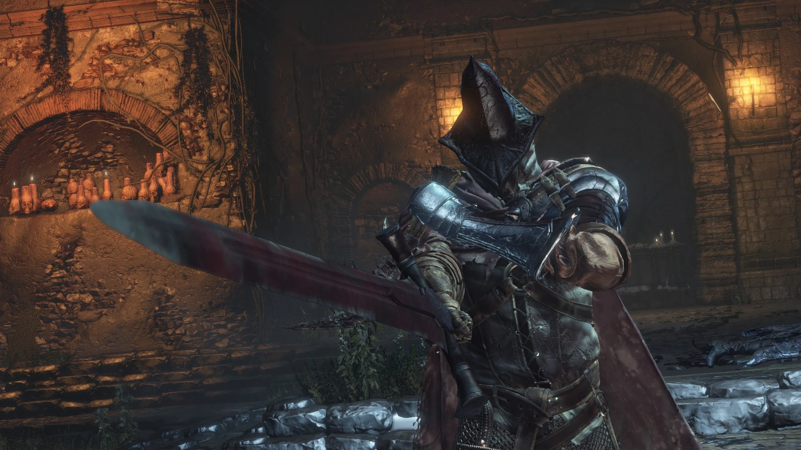
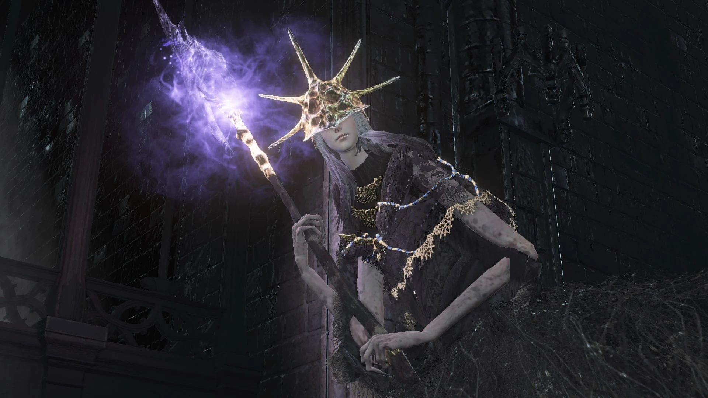
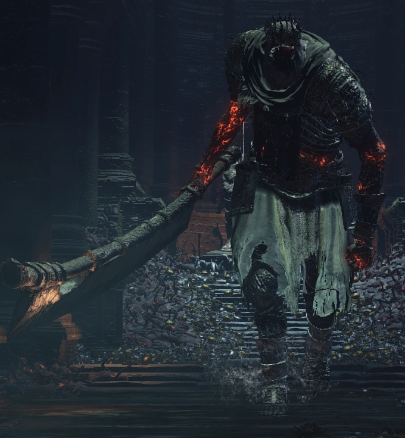
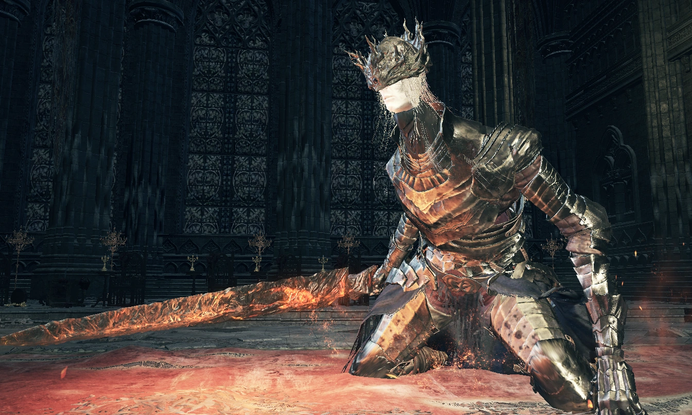
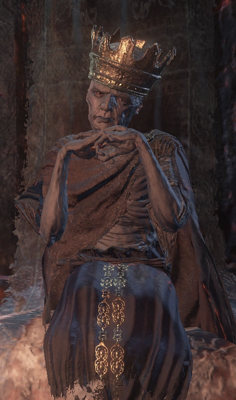
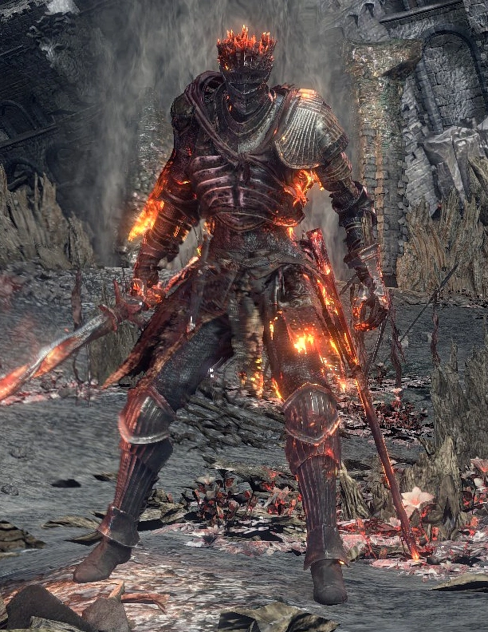

Los Vigilantes del Abismo, también conocidos como la Legión
de no muertos de Farron, son un grupo de jefes y Señores de
la Ceniza de Dark Souls III. Son los herederos del
legendario Caballero Artorias en su lucha contra la
Oscuridad. Ellos son los encargados de vigilar el Abismo, el
lugar del que nace el mal primigenio, y ponerle fin, tome la
forma que tome.
Vigilantes del Abismo en Fandom.com
Vigilantes del Abismo
1.548 PS

Aldrich, el Devoradioses era originalmente una abominación
de masa oscura que se arrastraba en busca del trono y las
ascuas pero tras devorar a Gwyndolin el Sol Oscuro asumió
parte de su forma fisica. Aldrich había devorado a
Gwyndolin, que estaba enfermo en ese momento, poseyendo así
la capacidad y la apariencia de este último. Aldrich fue
encerrado y obligado a convertirse en Señor de la Ceniza, en
lugar de sacrificarse voluntariamente o maldiciéndose como
el Príncipe Lothric.
Aldrich en Fandom.com
Aldrich, el Devoradioses
4.727 PS

Yhorm, el Gigante es uno de los Señores de la Ceniza de Dark
Souls III. Hace mucho tiempo, el gigante Yhorm, descendiente
de un antiguo conquistador, fue llamado a dirigir a su
pueblo antaño subyugado, con una espada pesada y un escudo
duro como la piedra. Yhorm regaló una espada matagigantes a
aquellos que no confiaban en él, para demostrar su
fiabilidad.
Yhorm en Fandom.com
Yhorm, el Gigante
28.000 PS

Lothric y Lorian, junto con Ocelotte, son los hijos del Rey
Oceiros y la Reina de Lothric. El mayor, Lorian, era un
caballero que logró acabar con el Príncipe demonio,
envolviendo su espada con el poder de las llamas. Lothric
nació enfermo y débil, y no parece haber tenido algún tipo
de entrenamiento en combate.
La estirpe de los Lothric estaba obsesionada con crear un niño tan fuerte que pudiera ser el candidato perfecto para enlazar la Primera Llama y sobrevivir como un Señor de la Ceniza. Pero cuando no pudieron producir un heredero lo suficientemente fuerte, la familia cometió un acto tan atroz e infame que maldijo a Lothric.
Lorian en Fandom.com
Lorian, Príncipe Anciano
7.730 PSLa estirpe de los Lothric estaba obsesionada con crear un niño tan fuerte que pudiera ser el candidato perfecto para enlazar la Primera Llama y sobrevivir como un Señor de la Ceniza. Pero cuando no pudieron producir un heredero lo suficientemente fuerte, la familia cometió un acto tan atroz e infame que maldijo a Lothric.

Ludleth es un Señor de la Ceniza que enlazó la llama antes
de los acontecimientos del juego. Es un practicante del
aparentemente poco observado arte de la transposición.
Poco se sabe acerca de su pasado, aunque está implícito en su trono que fue exiliado de algún lugar en algún momento debido a que el mencionado arte era considerado tabú.
Ludleth en Fandom.com
Ludleth de Courland
250 PSPoco se sabe acerca de su pasado, aunque está implícito en su trono que fue exiliado de algún lugar en algún momento debido a que el mencionado arte era considerado tabú.

El Alma de Cenizas es una amalgama de los anteriores Señores
de la Ceniza incluyendo al No muerto elegido, al Portador de
la maldición, a Gwyn, el Primer Señor y a otros personajes
que enlazaron la Primera Llama.
El papel del Alma de Cenizas como la manifestación deífica de los Señores de la Ceniza es defender la llama y actuar como la última línea de defensa contra el Ser de la ceniza cuando este llega a la ubicación de la Primera Llama.
Alma de Cenizas en Fandom.com
Alma de Cenizas
10.750 PSEl papel del Alma de Cenizas como la manifestación deífica de los Señores de la Ceniza es defender la llama y actuar como la última línea de defensa contra el Ser de la ceniza cuando este llega a la ubicación de la Primera Llama.